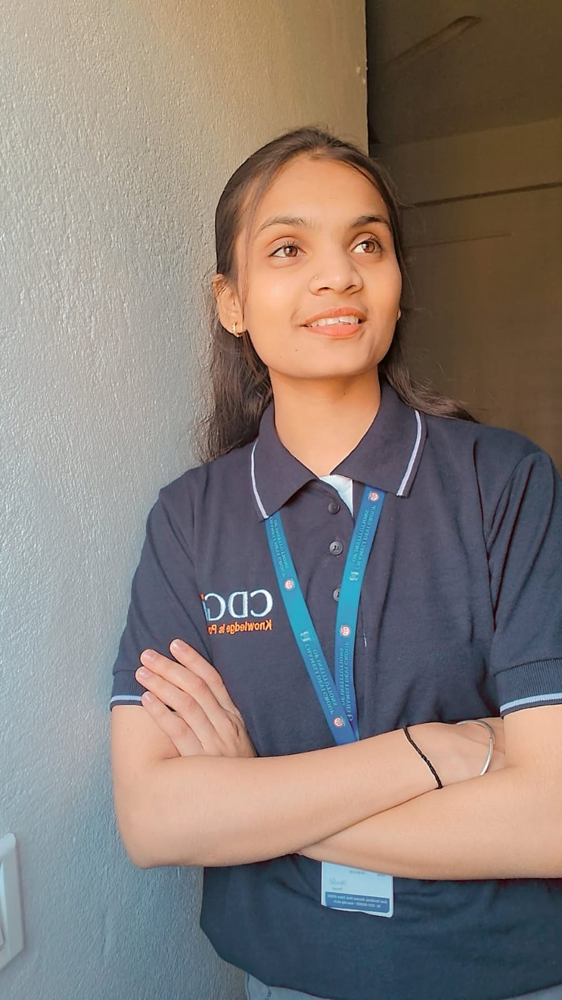

Student at RGPV University, passionate about solving complex problems using Machine Learning and Deep Learning.
Python, SQL, C, C++
Pandas, NumPy, EDA, Data Cleaning
Scikit-learn, Feature Engineering, Model Evaluation
PyTorch, ANN, CNN, FNN
Matplotlib, Seaborn
Git, GitHub, VS Code, Jupyter, Google Colab
Machine Learning model to automate loan eligibility process based on customer details.
View projectPredicting customer retention with focus on Feature Engineering and Model Evaluation.
View projectDeep Reinforcement Learning agent trained to play Flappy Bird using Deep Q-Networks.
View projectNLP application for generating concise summaries from large text documents.
View project